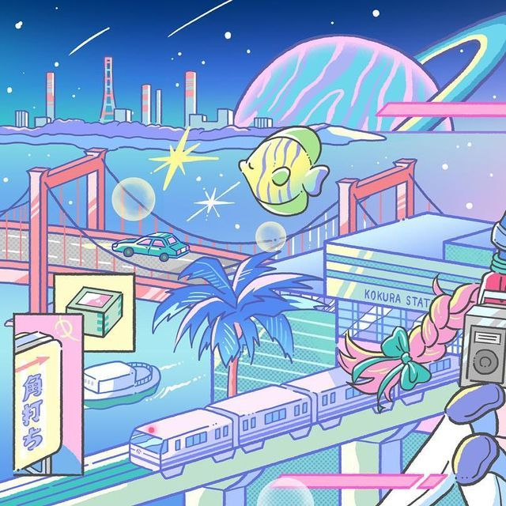

city pop has returned to my brain with the buzz of summer's heat . . and so has ttsuro ymashita . . . . who i only recently realised had disappeared from my city pop spotify playlist ages ago , and caused controversy within the city pop listener's community internationally by aggressively gatekeeping his music to only physical formats , and copyright striking all digital uploads like his life depends on it (¬`‸´¬) all because the worse quality of sound that digital streaming has compared to vinyl recordings is " inferior " to that .
i hope someday he'll realise that not everyone wants to buy large , expensive devices to play expensive vinyls that are difficult ( did i already mention expensive ) to obtain outside of japan . . the cost and accessibility issues are equally irritating , imo . unluckily for mr y*mashita i am a pirate , and i will listen to local versions of his music as much as i damn please ! alongside the rest of my city pop playlist , where the majority of artists have been much more amiable to sharing their music with the world , even at the cost of sound quality („• ֊ •„)
picture cropped from @shihiso on instagram :3 ( https://www.instagram.com/p/CMyr38znF4Q/ )
